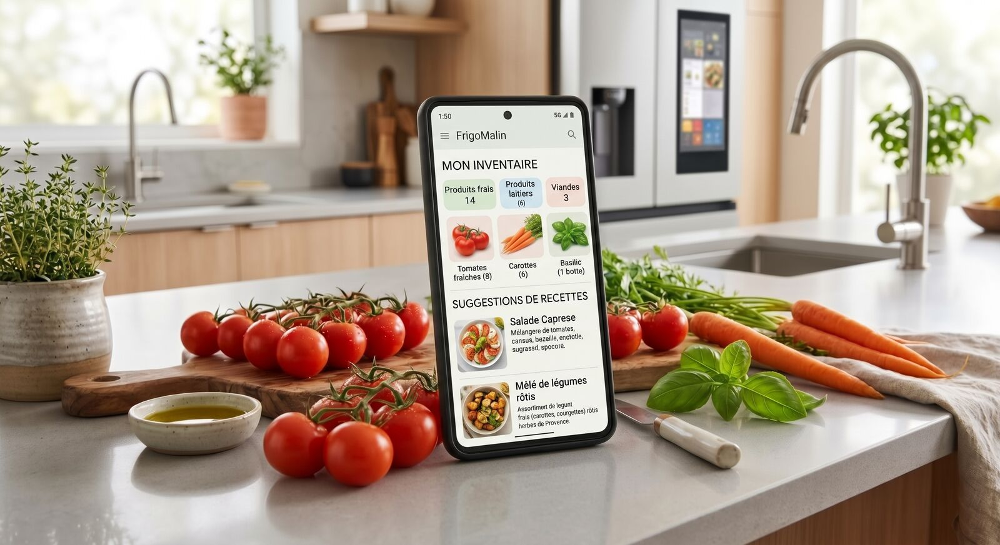

FrigoMalin & GitHub Copilot
De l'idée au POC publié sur GitHub Pages, en maîtrisant toutes les fonctionnalités de GitHub Copilot : instructions, skills, agents personnalisés, orchestration, optimisation du contexte et des tokens.

Développeurs · ~80 %
Workspace & contexte, maquettes Stitch, skills, agents, orchestration, optimisation, tests, CI/CD. Stack recommandée : React + TypeScript avec Vite (alternatives : Vue 3 ou Svelte), IndexedDB, Vitest, Playwright.
Product Owners & Architecture · ~20 %
PRODUCT.md, périmètre du MVP, backlog GitHub Issues via MCP (les critères Gherkin servent de spécification), ADR, recette sur l'URL publique, backlog V2 prêt pour les agents.
Le produit : FrigoMalin, l'application anti-gaspillage du foyer. Inventaire du frigo et des placards avec scan de code-barres (Open Food Facts), dates DLC/DDM, « Que cuisiner ? » avec ce qui expire, liste de courses anti-doublon, tableau « kg et € sauvés », PWA installable et hors ligne. 100 % navigateur : aucun backend, aucun Docker, publiée sur GitHub Pages.
Outil unique : GitHub Copilot (VS Code et github.com), complété par Google Stitch pour les maquettes. Contrairement aux autres parcours, l'outil n'est pas « au choix » : maîtriser Copilot est l'objet même de la formation. Fonctionnalités vérifiées en octobre 2026 ; Copilot évolue vite, vérifiez la documentation officielle avant chaque session.
Le parcours : de l'idée à l'URL publique
Fil rouge « consommation » : dès le module 3, chaque lab note ses crédits et son contexte dans docs/usage-log.md. Ces mesures servent au module 7 (Debug View de Copilot) et à la rétrospective finale.
Ici, pas de prompt prêt à copier
Savoir écrire le bon prompt, c'est LA compétence. La plupart des labs vous donnent une amorce à compléter, des indices à débloquer un par un et des critères de réussite pour vous auto-évaluer ; d'autres sont des QCM interactifs corrigés immédiatement.
Les 5 ingrédients d'un bon prompt Copilot
- Rôle : « Agis comme… » ou, mieux, le bon agent sélectionné.
- Contexte ciblé : 2 ou 3 fichiers nommés avec
#, pas tout le projet. - Une seule tâche, bornée (« uniquement… », « n'écris pas… »).
- Contraintes & format de sortie : où écrire, quel format, quelle longueur.
- Critère de fin : la commande qui prouve que c'est terminé (
npm test…).
Le dépôt que vous allez construire
frigomalin/ ├─ PRODUCT.md ├─ .copilotignore ├─ .mcp.json (serveurs MCP) ├─ design/stitch/ (web, mobile) ├─ docs/adr/ docs/usage-log.md ├─ .github/ │ ├─ copilot-instructions.md │ ├─ instructions/*.instructions.md │ ├─ skills/*/SKILL.md │ ├─ agents/*.agent.md │ ├─ hooks/quality.json │ └─ workflows/deploy-pages.yml └─ src/ domain · data · ui
Règle d'or : tout ce que vous créez vit dans le dépôt (versionné et partagé avec l'équipe), jamais dans votre profil VS Code. Chaque lab précise « Où créer le fichier ? ».
Prérequis
- VS Code + GitHub Copilot (licence payante recommandée : crédits IA et serveurs MCP)
- Node.js 22 LTS et Git
- Un compte GitHub (dépôt public ou Pages activé) et un compte Google pour Stitch
- Un téléphone pour tester la PWA et le scan de code-barres
- Licence Copilot Business/Enterprise : politique « MCP servers in Copilot » activée par l'administrateur (désactivée par défaut) ; dossier du projet approuvé dans VS Code (Workspace Trust)
- Copilot est facturé à l'usage : prévoir un budget de crédits par apprenant (le module 7 apprend à le réduire).